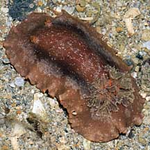
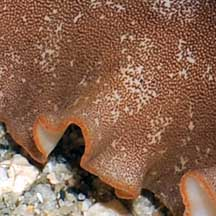
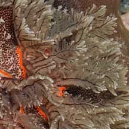
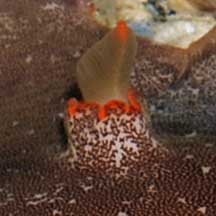
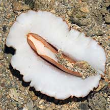
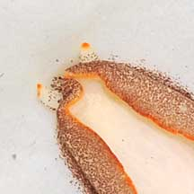
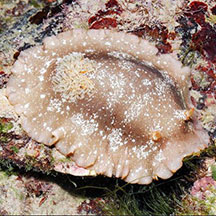
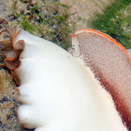
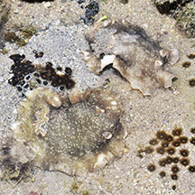

|
|
| nudibranchs text index | photo index |
| Phylum Mollusca > Class Gastropoda > sea slugs > Order Nudibranchia |
| Platydoris
nudibranch Platydoris scabra Family Discodorididae updated May 2020 Where seen? This large nudibranch is sometimes seen near living reefs on some of our Southern shores. It may be seasonal: when seen, often many individuals are spotted during the same trip. Features: 10-12cm long. Flat stiff body white, finely granular surface with lots of tiny brown raised pimples. There are orange edges of the body and foot, and the openings where the large rhinophores and feathery gills emerge. The underside is plain white with a narrow foot and small oral tentacles. It can drop off portions of its body mantle when alarmed. So don't handle it. What does it eat? It probably eats sponges. |
 Pulau Hantu, Sep 08 |
 Orange edge to side of the body. |
 Orange edge to opening where feathery gills emerge. |
 Orange edge to opening where rhinophore emerges. |
 White underside with narrow foot. |
 Tiny oral tentacles tipped orange, and foot also edged orange. |
| Platydoris nudibranchs on Singapore shores |
On wildsingapore
flickr
|
| Other sightings on Singapore shores |
 St John's Island, Feb 13 |
 |
 Pulau Tekukor, Jun 16 |
Links
References
|